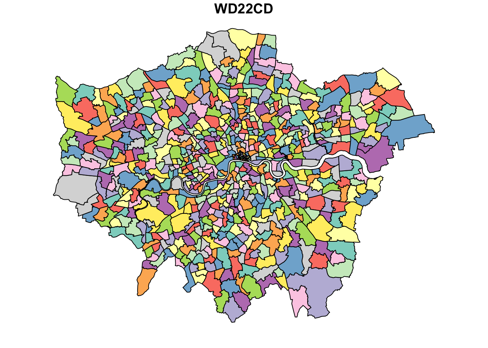
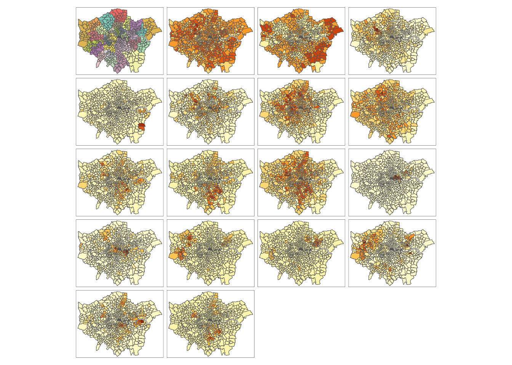
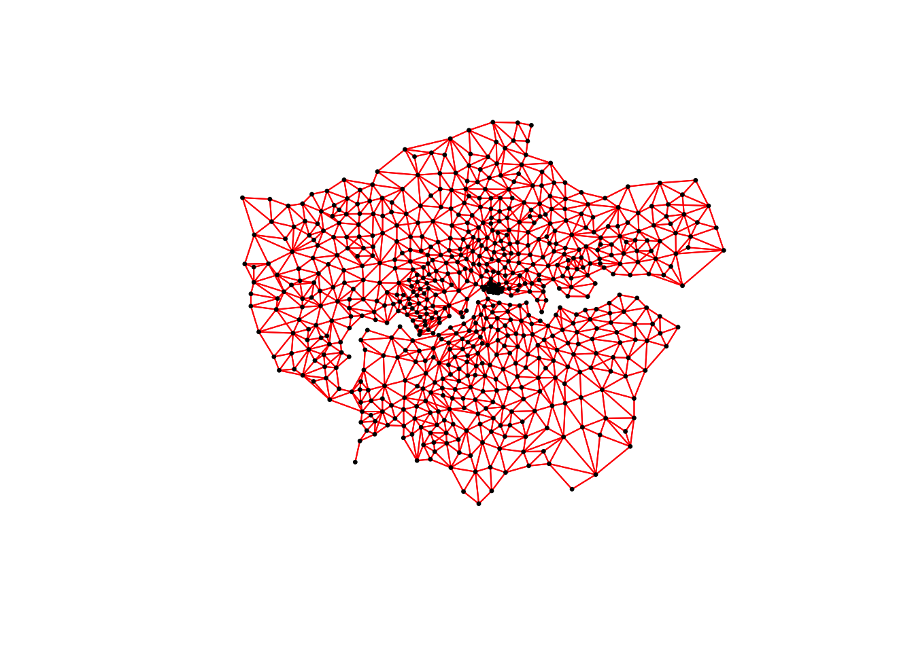
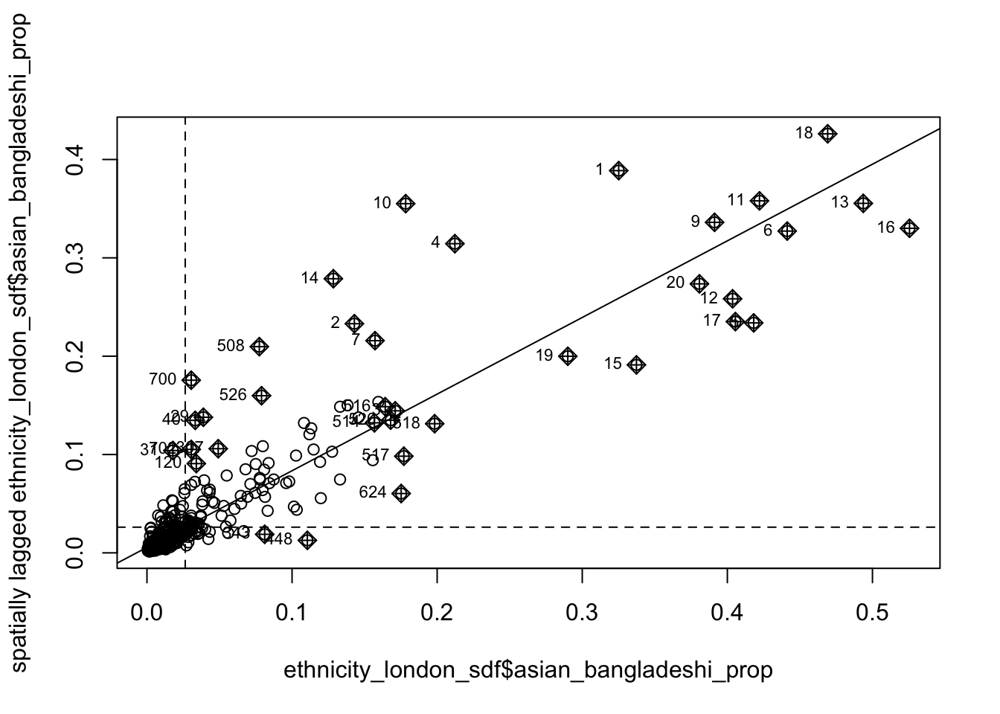

1 Analysing Spatial Patterns III: Spatial Autocorrelation
This week, we will be looking at measuring spatial dependence. Spatial dependence is the idea that an observed value of a variable in one location is to some degree dependent on the observed value of the same value in a nearby location. For spatial analysis, this dependence can be assessed and measured statistically by considering the level of spatial autocorrelation between values of a specific variable, observed in either different locations or between pairs of variables observed at the same location. Spatial autocorrelation occurs when these values are not independent of one another and instead cluster together in space.
1.1 Lecture slides
The slides for this week’s lecture can be downloaded here: [Link]
1.2 Reading list
Essential readings
- Griffith, D. 2017. Spatial Autocorrelation. The Geographic Information Science & Technology Body of Knowledge. [Link]
- Gimond, M. 2023. Intro to GIS and spatial analysis. Chapter 13: Spatial autocorrelation. [Link]
- Livings, M. and Wu, A-M. 2020. Local Measures of Spatial Association. The Geographic Information Science & Technology Body of Knowledge. [Link]
Suggested readings
- Lee, S. 2019. Uncertainty in the effects of the modifiable areal unit problem under different levels of spatial autocorrelation: a simulation study. International Journal of Geographical Information Science 33: 1135-1154. [Link]
- Harris, R. 2020. Exploring the neighbourhood-level correlates of Covid-19 deaths in London using a difference across spatial boundaries method. Health & Place 66: 102446. [Link]
1.3 Population clusters
This week, we are using a completely new dataset and we will investigate to what extent people in London who self-identified as Asian-Bangladeshi in the 2021 Census are clustered in London at the Ward-level. To complete this analysis, we will be using a data download from the London Datastore, which we will need to clean and join to a spatial layer containing the relevant Ward boundaries.
The Wards and electoral divisions in the United Kingdom are electoral districts at sub-national level. These differ from the Census geographies (LSOAs, MSOAs) we have been using so far.
1.3.1 Getting started
Open a new script within your GEOG0030 project and save this script as wk8-population-analysis.r. At the top of your script, add the following metadata:
R code
# Analysing population clusters in London
# Date: January 2024Now let us add all of the libraries we will be using today to the top of our script:
R code
# load libraries
library(tidyverse)
library(sf)
library(tmap)
library(spdep)We will start by downloading the 2022 Ward boundaries for Great Britain:
- Navigate to the Open Geography Portal: [Link]
- In the main menu go to Boundaries -> Administrative Boundaries -> Wards / Electoral Divisions -> 2022 Boundaries.
- Click on Wards (December 2022) Boundaries GB GBC.
- Click on Download -> Download GeoPackage.
- Save the file as
WARDS2022.gpkgin yourboundariesfolder.
For the data on ethnic groups we turn to the London Datastore again. They have prepared just the dataset that we want to use from the 2021 Census.
- Navigate to the London Datastore: [Link].
- Click on Data in the navigation menu.
- Type 2021 census Wards ethnicity into the search field.
- Download the
Ethnic group.xlsxfile containing Ward codes and counts of number of individuals who self-identify with a particular population group.
Open de file in Excel, and look at the first tab (Front Page). You will notice that under 2022 Wards are listed as the administrative geography the data have been aggregated to. Coincidentally we just downloaded the 2022 Ward boundaries. The actual data that we want to use can be found in the 2021 tab, which contains the 2021 Census results on ethnicity.
Looking at the Excel file, we clearly need to extract the data and save this as a separate csv file before we can import the data into R.
- Open a new Excel spreadsheet.
- From the 2021 tab of the
Ethnic group.xlsxspreadsheet, cut (Edit -> Cut) all cells from columns A to X and rows 1 to 681 and paste these into this new spreadsheet. - Save the file as
csvinto yourdatafolder asWARD2021_ethnic_group.csv.
After this, let’s load our London Ward file:
R code
# read in our Ward GeoPackage
ward_gb <- st_read("data/raw/boundaries/WARDS2022.gpkg")Reading layer `WD_DEC_22_GB_BGC' from data source
`/Users/justinvandijk/Library/CloudStorage/Dropbox/UCL/Web/jtvandijk.github.io/GEOG0030/data/raw/boundaries/WARDS2022.gpkg'
using driver `GPKG'
Simple feature collection with 8021 features and 11 fields
Geometry type: MULTIPOLYGON
Dimension: XY
Bounding box: xmin: 5512.998 ymin: 5352.6 xmax: 655653.8 ymax: 1220299
Projected CRS: OSGB36 / British National GridCheck the CRS of our ward_gb spatial dataframe:
R code
# inspect CRS
st_crs(ward_gb)Coordinate Reference System:
User input: OSGB36 / British National Grid
wkt:
PROJCRS["OSGB36 / British National Grid",
BASEGEOGCRS["OSGB36",
DATUM["Ordnance Survey of Great Britain 1936",
ELLIPSOID["Airy 1830",6377563.396,299.3249646,
LENGTHUNIT["metre",1]]],
PRIMEM["Greenwich",0,
ANGLEUNIT["degree",0.0174532925199433]],
ID["EPSG",4277]],
CONVERSION["British National Grid",
METHOD["Transverse Mercator",
ID["EPSG",9807]],
PARAMETER["Latitude of natural origin",49,
ANGLEUNIT["degree",0.0174532925199433],
ID["EPSG",8801]],
PARAMETER["Longitude of natural origin",-2,
ANGLEUNIT["degree",0.0174532925199433],
ID["EPSG",8802]],
PARAMETER["Scale factor at natural origin",0.9996012717,
SCALEUNIT["unity",1],
ID["EPSG",8805]],
PARAMETER["False easting",400000,
LENGTHUNIT["metre",1],
ID["EPSG",8806]],
PARAMETER["False northing",-100000,
LENGTHUNIT["metre",1],
ID["EPSG",8807]]],
CS[Cartesian,2],
AXIS["(E)",east,
ORDER[1],
LENGTHUNIT["metre",1]],
AXIS["(N)",north,
ORDER[2],
LENGTHUNIT["metre",1]],
USAGE[
SCOPE["Engineering survey, topographic mapping."],
AREA["United Kingdom (UK) - offshore to boundary of UKCS within 49°45'N to 61°N and 9°W to 2°E; onshore Great Britain (England, Wales and Scotland). Isle of Man onshore."],
BBOX[49.75,-9,61.01,2.01]],
ID["EPSG",27700]]This all looks good, so we can move to also load the csv we just created:
R code
# read csv
ethnicity_london <- read_csv("data/data/WARD2021_ethnic_group.csv")New names:
Rows: 680 Columns: 24
── Column specification
──────────────────────────────────────────────────────── Delimiter: "," chr
(4): ward code, ward name, local authority code, local authority name dbl (19):
All usual residents, White British, White Irish, White Gypsy/Irish... lgl (1):
...9
ℹ Use `spec()` to retrieve the full column specification for this data. ℹ
Specify the column types or set `show_col_types = FALSE` to quiet this message.
• `` -> `...9`Inspect the file by using the View() function. First thing you will notice is that the column names are rather long. Second thing you will notice is that one of the columns does not contain any information but NA values. It also does not have a meaningful name (...9). It seems that in the process of converting the Excel file into a csv an extra column was added in the process. Let’s drop this column, and any other columns we do not need, and then rename the remaining columns for easier reference.
If your conversion from Excel to csv did not result in an extra column, update the code below to reflect this so to avoid dropping a column that contains information.
R code
# drop columns by index
ethnicity_london <- ethnicity_london |>
select(-3, -4, -9)
# rename columns
names(ethnicity_london) <- c("ward22cd", "ward22nm", "all_pop", "white_british",
"white_irish", "white_gypsy", "white_other", "mixed_white_asian", "mixed_white_african",
"mixed_white_caribbean", "mixed_other", "asian_bangladeshi", "asian_chinese",
"asian_indian", "asian_pakistani", "asian_other", "black_african", "black_caribbean",
"black_other", "other_arab", "other")If you like, you can also write out the final csv using the write_csv() function.
1.3.2 Data preparation
We now need to join our population group dataset to our Ward spatial layer. Because the Ward dataset contains every the geometry of every single Ward in Great Britain, we can use an inner_join so that only the geometries of those Wards that also appear in the ethnicity_london object are retained.
R code
# inner join
ethnicity_london_sdf <- ward_gb |>
inner_join(ethnicity_london, by = c("WD22CD" = "ward22cd"))Have a look at your newly created Ward dataframe using the plot() function.
R code
# inspect
plot(ethnicity_london_sdf, max.plot = 1)This is looking reasonably okay, however, it is clear that there are some data missing from the City of London. The reason for this is that the dataset we downloaded only contains an overall value for the City of London rather than a value for every Ward. If we only were interested in plotting the data, we could simply add a layer with no data to colour in the empty City of London area, but for measuring spatial autocorrelation it is essential that there are no holes in the spatial data that should not be there. We will fix this by extracting the Wards pertaining to the City of London and adding these to our spatial dataframe.
R code
# filter Wards pertaining to City of London
city_of_london_sdf <- ward_gb |>
filter(LAD22NM == "City of London")We have now effectively filtered out the 25 2022 Wards that fall with in the City of London Local Authority District. We now need to assign our ethnic group data to this. We will first add the data and subsequently divide the overall counts equally across the Wards.
This is a bit of a lazy approach. Much better would be to actually try and find the actual Ward counts from the 2021 Census.
To join the ethnicity_london dataset to the City of London wards is a bit tricky — because the ethnicity_london dataset does not contain the actual Wards codes for the City of London Wards. Fortunately for us, the London Data Store was a bit cheeky and in the ethnic group file they created they put the Local Authority District code of the City of London into the Ward column. We can use this to our advantage and join our datasets together with a left_join.
R code
# join
city_of_london_sdf <- city_of_london_sdf |>
left_join(ethnicity_london, by = c("LAD22CD" = "ward22cd"))
# inspect
head(city_of_london_sdf)Simple feature collection with 6 features and 31 fields
Geometry type: MULTIPOLYGON
Dimension: XY
Bounding box: xmin: 531866.1 ymin: 180540.4 xmax: 533617.7 ymax: 182084.5
Projected CRS: OSGB36 / British National Grid
WD22CD WD22NM WD22NMW LAD22CD LAD22NM BNG_E BNG_N
1 E05009288 Aldersgate E09000001 City of London 532169 181721
2 E05009289 Aldgate E09000001 City of London 533397 181175
3 E05009290 Bassishaw E09000001 City of London 532438 181495
4 E05009291 Billingsgate E09000001 City of London 533151 180754
5 E05009292 Bishopsgate E09000001 City of London 533207 181664
6 E05009293 Bread Street E09000001 City of London 532224 181151
LONG LAT Shape_Leng GlobalID
1 -0.09645 51.5190 1726.380 {E218C4C6-CC77-423C-9312-010363F61625}
2 -0.07896 51.5138 1895.285 {E968A26F-9AF6-460A-A075-7F8AB975CB16}
3 -0.09266 51.5169 1428.356 {8B433738-7452-4891-A3B0-17498C13F8AD}
4 -0.08267 51.5100 1670.199 {7FF90094-80A5-466D-AE07-B30EC9966CCC}
5 -0.08152 51.5182 2748.846 {DBE8B6D5-0C08-4FB5-9C36-D2F7483B4792}
6 -0.09587 51.5138 2082.841 {1EC7A9B3-EAB0-4CC5-8627-354BA7865D6C}
ward22nm all_pop white_british white_irish white_gypsy
1 City of London (aggregated) 7375 4243 180 3
2 City of London (aggregated) 7375 4243 180 3
3 City of London (aggregated) 7375 4243 180 3
4 City of London (aggregated) 7375 4243 180 3
5 City of London (aggregated) 7375 4243 180 3
6 City of London (aggregated) 7375 4243 180 3
white_other mixed_white_asian mixed_white_african mixed_white_caribbean
1 1373 111 37 38
2 1373 111 37 38
3 1373 111 37 38
4 1373 111 37 38
5 1373 111 37 38
6 1373 111 37 38
mixed_other asian_bangladeshi asian_chinese asian_indian asian_pakistani
1 103 232 263 216 16
2 103 232 263 216 16
3 103 232 263 216 16
4 103 232 263 216 16
5 103 232 263 216 16
6 103 232 263 216 16
asian_other black_african black_caribbean black_other other_arab other
1 213 98 46 49 69 85
2 213 98 46 49 69 85
3 213 98 46 49 69 85
4 213 98 46 49 69 85
5 213 98 46 49 69 85
6 213 98 46 49 69 85
SHAPE
1 MULTIPOLYGON (((532248.7 18...
2 MULTIPOLYGON (((533466.1 18...
3 MULTIPOLYGON (((532536.2 18...
4 MULTIPOLYGON (((533320.1 18...
5 MULTIPOLYGON (((533404.6 18...
6 MULTIPOLYGON (((532025 1813...This seems to have worked quite nicely, except that now all our data points have been duplicated. We need to fix this by dividing all counts by 25 (the number of wards) to equally divide the counts across the City of London. If we have to do this for every column individually there is a lot of typing involved, but fortunately we can use the mutate_at() function from the dplyr library to do this for the columns in one go.
Check the documentation of the mutate_at() function to see how it works in detail, but essentially you provide a function, in this case “divide a number by the total number of Wards” and do this for all columns that are specified.
R code
# divide counts by number of Wards
city_of_london_sdf <- city_of_london_sdf |>
mutate_at(c(13:31), function(x) as.integer(x/nrow(city_of_london_sdf)))
# inspect
head(city_of_london_sdf)Simple feature collection with 6 features and 31 fields
Geometry type: MULTIPOLYGON
Dimension: XY
Bounding box: xmin: 531866.1 ymin: 180540.4 xmax: 533617.7 ymax: 182084.5
Projected CRS: OSGB36 / British National Grid
WD22CD WD22NM WD22NMW LAD22CD LAD22NM BNG_E BNG_N
1 E05009288 Aldersgate E09000001 City of London 532169 181721
2 E05009289 Aldgate E09000001 City of London 533397 181175
3 E05009290 Bassishaw E09000001 City of London 532438 181495
4 E05009291 Billingsgate E09000001 City of London 533151 180754
5 E05009292 Bishopsgate E09000001 City of London 533207 181664
6 E05009293 Bread Street E09000001 City of London 532224 181151
LONG LAT Shape_Leng GlobalID
1 -0.09645 51.5190 1726.380 {E218C4C6-CC77-423C-9312-010363F61625}
2 -0.07896 51.5138 1895.285 {E968A26F-9AF6-460A-A075-7F8AB975CB16}
3 -0.09266 51.5169 1428.356 {8B433738-7452-4891-A3B0-17498C13F8AD}
4 -0.08267 51.5100 1670.199 {7FF90094-80A5-466D-AE07-B30EC9966CCC}
5 -0.08152 51.5182 2748.846 {DBE8B6D5-0C08-4FB5-9C36-D2F7483B4792}
6 -0.09587 51.5138 2082.841 {1EC7A9B3-EAB0-4CC5-8627-354BA7865D6C}
ward22nm all_pop white_british white_irish white_gypsy
1 City of London (aggregated) 295 169 7 0
2 City of London (aggregated) 295 169 7 0
3 City of London (aggregated) 295 169 7 0
4 City of London (aggregated) 295 169 7 0
5 City of London (aggregated) 295 169 7 0
6 City of London (aggregated) 295 169 7 0
white_other mixed_white_asian mixed_white_african mixed_white_caribbean
1 54 4 1 1
2 54 4 1 1
3 54 4 1 1
4 54 4 1 1
5 54 4 1 1
6 54 4 1 1
mixed_other asian_bangladeshi asian_chinese asian_indian asian_pakistani
1 4 9 10 8 0
2 4 9 10 8 0
3 4 9 10 8 0
4 4 9 10 8 0
5 4 9 10 8 0
6 4 9 10 8 0
asian_other black_african black_caribbean black_other other_arab other
1 8 3 1 1 2 3
2 8 3 1 1 2 3
3 8 3 1 1 2 3
4 8 3 1 1 2 3
5 8 3 1 1 2 3
6 8 3 1 1 2 3
SHAPE
1 MULTIPOLYGON (((532248.7 18...
2 MULTIPOLYGON (((533466.1 18...
3 MULTIPOLYGON (((532536.2 18...
4 MULTIPOLYGON (((533320.1 18...
5 MULTIPOLYGON (((533404.6 18...
6 MULTIPOLYGON (((532025 1813...That is much better. The last thing we now need to do is to combine our city_of_london_sdf with our ethnicity_london_sdf. Because both spatial dataframe contain the exact same data and column names, we can simply bind them together.
R code
# bind spatial dataframes
ethnicity_london_sdf <- ethnicity_london_sdf |>
rbind(city_of_london_sdf)Let’s check whether our approach worked by plotting the updated spatial dataframe:
R code
# inspect
plot(ethnicity_london_sdf, max.plot = 1)
This looks much better: there are no more obvious holes in our spatial dataframe and we can move on.
1.4 Statistical distributions
Today, we are interested in looking at spatial autocorrelation: the effect of spatial processes on distributions. We will be using our newly created ethnicity_london_sdf to look at this in action. Before we do this, however, let’s start by looking at the data distribution.
Analysing the distribution of your data and summarising the main characteristics of its distribution is known as Exploratory Data Analysis (EDA). EDA was promoted by prominent statistician John Tukey to encourage data analysts to explore their data outside of traditional formal modelling and come up with new areas of investigation and hypotheses. Tukey promoted the use of five summary statistics: the maximum, the minimum, the median, and the quartiles, which, in comparison to the mean and standard deviation, provide a more robust understanding of a dataset’s distribution, particularly if the data is skewed.
We looked at how we can use R to extract some of these summary statistics briefly in Week 4’s computer tutorial, but let’s have a look at how we can add further to this EDA. A simple and straightforward way to extract the main characteristics of a dataset is by using the summary() function.
The summary() function can be called on a dataset as a whole and will generate summary statistics for each numeric variable.
R code
# summarise dataframe, but exclude geometry column
summary(ethnicity_london_sdf |>
st_drop_geometry()) WD22CD WD22NM WD22NMW LAD22CD
Length:704 Length:704 Length:704 Length:704
Class :character Class :character Class :character Class :character
Mode :character Mode :character Mode :character Mode :character
LAD22NM BNG_E BNG_N LONG
Length:704 Min. :505661 Min. :157756 Min. :-0.47645
Class :character 1st Qu.:523789 1st Qu.:174575 1st Qu.:-0.21930
Mode :character Median :531040 Median :181022 Median :-0.11311
Mean :530499 Mean :180206 Mean :-0.12106
3rd Qu.:537483 3rd Qu.:186252 3rd Qu.:-0.02262
Max. :557943 Max. :199291 Max. : 0.27621
LAT Shape_Leng GlobalID ward22nm
Min. :51.30 Min. : 965.1 Length:704 Length:704
1st Qu.:51.46 1st Qu.: 4888.3 Class :character Class :character
Median :51.51 Median : 6496.1 Mode :character Mode :character
Mean :51.51 Mean : 7213.4
3rd Qu.:51.56 3rd Qu.: 8619.1
Max. :51.68 Max. :35083.0
all_pop white_british white_irish white_gypsy
Min. : 51 Min. : 10 Min. : 1 Min. : 0.00
1st Qu.: 9641 1st Qu.: 3102 1st Qu.: 148 1st Qu.: 3.00
Median :11712 Median : 4854 Median : 227 Median : 8.00
Mean :11611 Mean : 5212 Mean : 250 Mean : 11.63
3rd Qu.:14467 3rd Qu.: 7077 3rd Qu.: 323 3rd Qu.: 14.00
Max. :21292 Max. :14727 Max. :1345 Max. :216.00
white_other mixed_white_asian mixed_white_african mixed_white_caribbean
Min. : 11.0 Min. : 0.0 Min. : 1.0 Min. : 1.00
1st Qu.: 767.5 1st Qu.:101.0 1st Qu.: 48.0 1st Qu.: 85.75
Median :1299.5 Median :142.0 Median : 79.0 Median :140.00
Mean :1468.7 Mean :144.2 Mean : 93.0 Mean :169.62
3rd Qu.:2057.2 3rd Qu.:185.2 3rd Qu.:125.2 3rd Qu.:223.00
Max. :4708.0 Max. :442.0 Max. :403.0 Max. :800.00
mixed_other asian_bangladeshi asian_chinese asian_indian
Min. : 1.0 Min. : 3.0 Min. : 0.0 Min. : 3.0
1st Qu.:109.0 1st Qu.: 42.0 1st Qu.: 83.0 1st Qu.: 191.0
Median :158.5 Median : 92.5 Median : 140.5 Median : 323.5
Mean :168.8 Mean : 315.5 Mean : 176.5 Mean : 771.1
3rd Qu.:225.2 3rd Qu.: 201.0 3rd Qu.: 214.2 3rd Qu.: 765.2
Max. :469.0 Max. :6852.0 Max. :1344.0 Max. :7763.0
asian_pakistani asian_other black_african black_caribbean
Min. : 0.0 Min. : 1.0 Min. : 3.0 Min. : 1.0
1st Qu.: 60.0 1st Qu.: 251.8 1st Qu.: 278.8 1st Qu.: 132.5
Median : 120.5 Median : 430.5 Median : 569.0 Median : 286.0
Mean : 317.9 Mean : 566.0 Mean : 815.2 Mean : 489.5
3rd Qu.: 331.8 3rd Qu.: 712.8 3rd Qu.:1123.8 3rd Qu.: 676.2
Max. :3633.0 Max. :3225.0 Max. :5297.0 Max. :3523.0
black_other other_arab other
Min. : 1.0 Min. : 1.00 Min. : 0.0
1st Qu.: 65.0 1st Qu.: 46.75 1st Qu.: 112.0
Median : 174.0 Median : 91.00 Median : 199.0
Mean : 241.6 Mean : 150.59 Mean : 248.6
3rd Qu.: 339.0 3rd Qu.: 169.00 3rd Qu.: 339.8
Max. :1563.0 Max. :1693.00 Max. :1411.0 This gives us an overview of all variables, but let’s have a look at our population group of interest for today’s practical by creating a histogram.
R code
# histogram
hist(ethnicity_london_sdf$asian_bangladeshi)We can actually see our data has a very strong negative skew with the majority of Wards having a relatively low number of individual self-identifying as Asian-Bangladeshi, but there are also some Wards where a large number of self-identified Asian-Bangladeshis are residing.
Another type of chart we can create just using the base R library is a boxplot. A boxplot shows the core characteristics of the distributions within a dataset, including the interquartile range.

Plot the boxplot of our asian_bangladeshi variable:
R code
# histogram
boxplot(ethnicity_london_sdf$asian_bangladeshi, horizontal = TRUE)Again, it is clear that the majority of Wards have a relatively low number of individuals that self-identify as Asian-Bangladeshi, but there is a good number of outliers. This raises the question whether these outliers are random or also clustered in space — and this brings us to spatial autocorrelation.
There is actually a lot more we can do in terms of visualising our data’s distribution and the best way forward would be to become more familiar with the ggplot2 library. ggplot2 is the main visualisation for both statistical and, increasingly, spatial graphs, charts and maps. Refer back to Week 4’s optional suggestions on how to get started with ggplot2.
1.5 Spatial distributions
Whilst statistical analysis of distributions focus on tests and charts, when we want to understand the spatial distribution of our phenomena, we have a very simple solution: we make a map. In our case, we are looking at areal unit data and therefore we can use a choropleth map to study our data across the Wards. In fact, we can actually create a sequence of maps not only covering the self-identified Asian-Bangladeshis but also other population groups.
R code
# store variables of interest as separate variable
var_fields <- names(ethnicity_london_sdf)[14:31]
# add Ward boundaries
tm_shape(ethnicity_london_sdf) +
tm_polygons(
col = "gray"
) +
# map all variables
tm_shape(ethnicity_london_sdf) +
# select variables
tm_polygons(
col = var_fields
) +
# add layout options
tm_layout(
legend.show = FALSE
) +
# add 4 columns
tm_facets(
ncol = 4
)
Despite these maps being a little small and not containing any labels, it seems that different population groups indeed concentrate in different parts of London. Let’s zoom into the Asian-Bangladeshi population group and add a legend:
R code
# map a specific variable
tm_shape(ethnicity_london_sdf) +
tm_polygons(
col = "gray"
) +
tm_shape(ethnicity_london_sdf) +
tm_polygons(
col = "asian_bangladeshi",
n = 5,
style = "jenks"
) +
tm_layout(
legend.outside = TRUE,
legend.outside.position = "right"
) +
tm_scale_bar(
breaks = c(0, 5, 10, 15, 20),
position = c("left", "bottom")
)Please remember, whereas the above map is fine for a quick inspection, it is technically incorrect because we are showing absolute numbers on a choropleth. This is something we should never do, unless the spatial units are identical in size (e.g. a hexagonal tessellation of an area), because larger areas will draw attention and affect the visualisation. To be fair, even for a quick inspection, it would be much better to normalise these counts by the total number of people living within each of the Wards to get a more honoust picture of the distribution.
The thing with spatial distributions is that we can quickly pick up on spatial patterns present within our data just by looking at the data. For example, we can clearly see some concentrations of people that self-identify as Asian-Bangladeshis in East London. The question now is whether these clusters are significant from a statistical point of view. This brings us to measuring spatial correlation.
Before we move on, let’s normalise the asian_banglades variable by creating a new variable that contains the proportion of individuals that self-identify as Asian-Bangladeshi:
R code
# calculate proportions
ethnicity_london_sdf <- ethnicity_london_sdf |>
mutate(asian_bangladeshi_prop = asian_bangladeshi/all_pop)1.6 Spatial autocorrelation
We can assess the distribution of our data using what is known as spatial autocorrelation tests, which can be conducted on both a global (identify if the data is clustered) and local (identify the precise clusters) scales. Whilst these different tests quantify how clustered, how random, or how dispersed, these distributions are through various approaches, ultimately they provide us with statistical and spatial information that can be used to create quantifiable descriptions of a variable’s distribution and how it vary over space.
As discussed in this week’s lecture, we have several types of tests that look to quantify spatial autocorrelation. Of these tests, there are two main categories:
- Measures of global spatial aucorrelation: tests that provide us with a statistic to tell whether spatial autocorrelation is present in our dataset.
- Measures of local spatial autocorrelation: tests that break down the global patterns and essentially tell us where we can find clusters and outliers.
Three of the most frequently used tests are the Global Moran’s I, the Local Moran’s I, and the Getis-Ord Gi*:
| Test | Scale | Test | Output |
|---|---|---|---|
| Global Moran’s I | Global | Tests how “random” the spatial distribution of values are, producing a correlation coefficient for the relationship between a variable and its surrounding values. | Metric between \(-1\) and \(1\). |
| Local Moran’s I | Local | Tests the difference between a unit of analysis and its neighbour(s). | Can be used alongside the mean of values to generate cluster type generations. |
| Getis-Ord Gi* | Local | Identifies statistically significant hot spots and cold spots using the local Getis-Ord \(Gi*\) statistic. | The returned \(z\)-scores can be used to identify statistically significant clusters. |
In each of these cases, our \(p\)-values are pseudo \(p\)-values, generated through simulations such as those outlined in the lecture. Our pseudo \(p\)-values allow us to interpret our relationships with a level of confidence. If we find that our relationships do not have any significance, then we cannot be confident in presenting them as true results.
1.6.1 Spatial lag
Underlying our global Moran’s I test is the concept of a spatial lag model. A spatial lag model plots each value against the mean of its neighbours’ values, defined by our selected approach. This creates a scatter plot, from which our Moran’s I statistic can be derived.
An Ordinary Least Squares (OLS) regression is used to fit the data and produce a slope, which determines the Moran’s I statistic:

To determine a \(p\)-value from our model for global Moran’s I, this spatial lag model is computed multiple times (think hundreds, thousands) but uses a random distribution of neighbouring values to determine different slopes for multiple ways our data could be distributed if our data was distributed randomly. The output of this test is a sampling distribution of Moran’s I values that would confirm a null hypothesis that our values are randomly distributed. These slopes are then compared to compare our observed slope versus our random slopes and identify whether the slope is within the main distribution of these values or an outlier:

If our slope is an outlier, i.e. not a value we would expect to compute if the data were randomly distributed, we are more confidently able to confirm our slope is reflective of our data’s clustering and is significant. Our pseudo-\(p\)-values are then computed from our simulation results:
\[ \frac{N_{extreme} + 1}{N + 1} \]
Where \({N_{extreme}}\) is the number of simulated Moran’s I values that were more extreme that our observed statistic and \({N}\) is the total number of simulations. In the example above, from Manuel Gimond, only 1 out the 199 simulations was more extreme than the observed local Moran’s I statistic. Therefore \({N_{extreme}}\) = 1 , so \(p\) is equal to \((1+1) / (199 + 1) = 0.01\). This means that “there is a 1% probability that we would be wrong in rejecting the null hypothesis”. This approach is known as a Monte Carlo simulation or permutation bootstrap test.
1.6.2 Neighbours
For any spatial autocorrelation test that you want to conduct, you will always need one critical piece of information: how do we define ‘neighbours’ in our dataset to enable the value comparison. Every observation in a dataset will need to have a set of neighbours to which its value is compared. To enable this, we need to determine how many or what type of neighbours should be taken into account for each observation when conducting a spatial autocorrelation test. These ‘neighbouring’ observations can be defined in a multitude of ways, based either on geometry or proximity, and include:
- Contiguity: Queen [nodes have to touch] or Rook [edges have to touch]
- Fixed Distance: Euclidean Distance [specified distance]
- (K) Nearest Neighbours: \(n\) closest neighbours

Depending on the variable you are measuring, the appropriateness of these different types of neighbourhood calculation techniques can change. As a result, how you define neighbours within your dataset will have an impact on the validity and accuracy of spatial analysis. Whatever approach you choose therefore needs to be grounded in particular theory that aims to represent the process and variable investigated.
Have a look at Esri’s Help Documentation on Selecting a conceptualization of spatial relationships: Best practices when you come to need to define neighbours yourself for your own analysis.
For our analysis into the clustering of population groups, we will primarily use the Queen contiguity. This approach is “effective when polygons are similar in size and distribution, and when spatial relationships are a function of polygon proximity (the idea that if two polygons share a boundary, spatial interaction between them increases)” (Esri, 2024).
1.6.3 Spatial weights matrix
Before we can calculate Moran’s I and any similar statistics, we need to first define our spatial weights matrix. This is known mathematically as \(W_{ij}\) and this will tell our code which unit neighbours which, according to our neighbour definition. For each neighbour definition, there is a different approach to implementing code to calculate the \(W_{ij}\) spatial weights matrix. We will look at three approaches:
- Creating a Queen \(W_{ij}\) spatial weights matrix
- Creating a Rook \(W_{ij}\) spatial weights matrix
- Creating a Fixed Distance \(W_{ij}\) spatial weights matrix
For either approach, we use a single line of code to create the relevant \(W_{ij}\) spatial weights matrix:
R code
# Queens neighbours
ward_neighbours_queen <- ethnicity_london_sdf |>
poly2nb(queen = T)
# Rook neighbours
ward_neighbours_rook <- ethnicity_london_sdf |>
poly2nb(queen = F)
# Fixed distance neighbours
ward_neighbours_fd <- dnearneigh(st_geometry(st_centroid(ethnicity_london_sdf)),
0, 4000)Warning in st_centroid.sf(ethnicity_london_sdf): st_centroid assumes attributes
are constant over geometries of xCreating our neighbours list through a single line of code, as above, does not really tell us much about the differences between these different definitions. It would be useful to the links between neighbours for our three definitions and visualise their distribution across space. To be able to do this, we will use a few lines of code to generate a visualisation based on mapping the defined connections between the centroids of our Wards.
A centroid in its most simplest form is the central point of an areal unit. How this central point is defined can be weighted by different approaches to understanding geometries or by using an additional variable. In our case, our centroids will reflect in the geometric middle point of our Wards.
We can calculate the centroids of our Wards using one of the geometric tools from the sf library: sf_centroid().
R code
# calculate the centroids of all of the Wards in London
ward_centroid <- ethnicity_london_sdf |>
st_centroid()Warning in st_centroid.sf(ethnicity_london_sdf): st_centroid assumes attributes
are constant over geometries of xWe actually already used this function above as the creation of the fixed distance spatial weights matrix requires a point geometry and then calculates which other point geometries are within the specified distance.
Now we have our Ward centroids, we can go ahead and plot the centroids and the defined neighbour connections between them from each of our neighbour definitions. To do so, we will use the plot() function, provide the relationships via our ward_neighbours_* lists and then the geometry associated with these lists from our ward_centroid object:
R code
# plot neighbours: Queen
plot(ward_neighbours_queen, st_geometry(ward_centroid), col = "red", pch = 20, cex = 0.5)
R code
# plot neighbours: Rook
plot(ward_neighbours_rook, st_geometry(ward_centroid), col = "blue", pch = 20, cex = 0.5)R code
# plot neighbours: Fixed distance
plot(ward_neighbours_fd, st_geometry(ward_centroid), col = "red", pch = 20, cex = 0.5)
In this example we use four kilometres as a distance threshold (i.e. centroids are considered neighbours if they are within three kilometres from one another, however, this is an arbitrary distance. When using a fixed distance make sure you have a good reason to select the distance (e.g. used in a paper that used the same administrative geographies).
When comparing these different maps, we can see that there is definitely a difference in the number of neighbours when we use our different approaches. It seems our fixed distance neighbour conceptualisation has many connections in the centre of London versus areas on the outskirts. We can see that our contiguity approaches provide a more equally distributed connection map, with our Queen conceptualisation having a few more links that our Rook conceptualisation.
Whichever form of neighbours you are using, always check the results, especially those of the contiguity based approaches. If the spatial file that you are using is not in good shape (e.g. polygons seem to touch upon visual inspection but actually do not), your results will be compromised.
We can also type the different neighbours objects into the console to find out the total number of non-zero links (i.e. total number of connections) present within the conceptualisation. You should see that Queen has 4022 non-zero links, Rook has 3854 and Fixed Difference has 12462 Whilst this code simply explores these conceptualisations it helps us understand further how our different neighbourhood conceptualisations can ultimately impact our overall analysis.
Remember: the number of links essentially determines the value of the spatial lag variable — i.e. the value of a certain variable in comparison with its neighbours.
With our neighbours now defined, we will go ahead and create our final spatial weights objects that will be needed for our spatial autocorrelation code. At the moment, we have our neighbours defined as a list but we need to convert it to a neighbours object using the nb2listw() function:
R code
# create a neighbours list - Queen
ward_spatial_weights_queen <- ward_neighbours_queen |>
nb2listw(style = "W")
# create a neighbours list - Rook
ward_spatial_weights_queen <- ward_neighbours_rook |>
nb2listw(style = "W")
# create a neighbours list
ward_spatial_weights_fd <- ward_neighbours_fd |>
nb2listw(style = "W", zero.policy = TRUE)The style that we specify in the code above determines how neighbours are weighted. style = 'W' row-standardises the values, e.g. if a Ward has five neighbours the value of the spatially lagged variable of interest will be the average of the variable of interest of these five neighbours — every neighbour has an equal weight. See ?nb2listw for more information on the different styles.
For the fixed distance measure we need to specify an additional parameter (zero.policy). This is because it is possible that there are Wards without any neighbour (i.e. there is a Ward with a centroid that is not within our specified distance). This is not ideal, because you would want every unit to have at least one neighbour. We do not need this parameter in case of the contiguity based measures today because every Ward polygon touches at least one other Ward polygon — provided our spatial data are in order.
1.6.4 Global Moran’s I
With a Global Moran’s I we test how random the spatial distribution of our values are, producing a global Moran’s statistic from the lag approach explained earlier.
The global Moran’s I statistic is a metric between \(-1\) and \(1\):
- \(-1\) suggests a completely even spatial distribution of values
- \(0\) suggests a random distribution
- \(1\) suggests a non-random distribution of clearly defined clusters
Before we run our global Moran’s I test, we will first create a spatial lag model plot which looks at each of the values plotted against their spatially lagged values. The graph will show quickly whether we are likely to expect our test to return a positive, zero, or negative statistic:
R code
# Moran's plot
moran.plot(ethnicity_london_sdf$asian_bangladeshi_prop, listw = ward_spatial_weights_queen)
We can see that there is a positive relationship between our asian_bangladeshi_prop variable and the spatially lagged asian_bangladeshi_prop variable, therefore we are expecting our global Moran’s I test to produce a statistic reflective of the slope visible in our scatter plot. Now we can run the global Moran’s I spatial autocorrelation test:
R code
# Moran's I
moran_queen <- ethnicity_london_sdf |>
pull(asian_bangladeshi_prop) |>
as.vector() |>
moran.test(ward_spatial_weights_queen)
# inspect result
moran_queen
Moran I test under randomisation
data: as.vector(pull(ethnicity_london_sdf, asian_bangladeshi_prop))
weights: ward_spatial_weights_queen
Moran I statistic standard deviate = 34.376, p-value < 2.2e-16
alternative hypothesis: greater
sample estimates:
Moran I statistic Expectation Variance
0.777712178 -0.001422475 0.000513713 The Moran’s I statistic calculated should be 0.73. With \(1\) = clustered, \(0\) = no pattern, \(-1\) = dispersed, this means we can confirm that the population in London that self-identifies as Asian-Bangladeshi is strongly positively autocorrelated. In other words, self-identified Asian-Bangladeshis in London tend to reside in similar areas. We can also consider the pseudo \(p\)-value as a measure of the statistical significance of the model - at < 2.2e-16, which confirm our result is statistically significant.
Before we run our local spatial autocorrelation tests, let’s just take a second to think through what our results have shown. From our global statistical tests, we can confirm that:
- There is clustering in our dataset.
- Similar values are clustering.
- High values are clustering.
We can conclude already that Wards with a relatively large proportion of people that self-identify as Asian-Bangladeshis tend to cluster in the same area. What we do not know yet is where these clusters are occurring. To help with this, we need to run our local models to identify where these clusters are located.
1.6.5 Local Moran’s I
A local Moran’s I test deconstructs the global Moran’s I down to its components and then constructs a localised measure of autocorrelation, which can show different cluster types. To run a local Moran’s I test, the code is similar to above:
R code
# Local Moran's I
local_moran_queen <- ethnicity_london_sdf |>
pull(asian_bangladeshi_prop) |>
as.vector() |>
localmoran(ward_spatial_weights_queen)
# inspect result
head(local_moran_queen) Ii E.Ii Var.Ii Z.Ii Pr(z != E(Ii))
1 28.400091 -0.033787002 4.5702873 13.300389 2.302674e-40
2 6.410822 -0.005144343 1.1975739 5.862879 4.549109e-09
3 4.547442 -0.007928661 0.9163467 4.758760 1.947861e-06
4 12.767600 -0.013075467 1.5033436 10.423767 1.931491e-25
5 21.632012 -0.058105443 6.3758219 8.590013 8.695953e-18
6 33.215970 -0.065154746 10.6742781 10.186588 2.276128e-24As you should see, we are not given a single statistic as we did with our global test, but rather a table of different statistics that are all related back to each of the Wards in our dataset. If we look at the help page for the localmoran function we can find out what each of these statistics mean:
| Name | Description |
|---|---|
| Ii | Local Moran’s I statistic |
| E.Ii | Expectation of local Moran’s I statistic |
| Var.Ii | Variance of local Moran’s I statistic |
| Z.Ii | Standard deviation of local Moran’s I statistic |
| Pr() | \(p\)-value of local Moran’s I statistic |
We therefore have a Moran’s I statistic for each of our Wards, as well as a significance value plus a few other pieces of information that can help us create some maps showing our clusters. To be able to do this, we need to join our local Moran’s I output back into our ethnicity_london_sdf spatial dataframe, which will then allow us to map these results.
To create this join, we first coerce our local Moran’s I output into a dataframe that we then join to our ethnicity_london_sdf spatial dataframe using the familiar mutate() function from the dplyr library. In our case, we do not need to provide an attribute to join these two dataframes together as we use the computer’s logic to join the data in the order in which it was created:
R code
# coerce to dataframe
local_moran_queen <- as.data.frame(local_moran_queen)
# update the names for easier reference
names(local_moran_queen) <- c("LMI_Ii", "LMI_eIi", "LMI_varIi", "LMI_zIi", "LMI_sigP")
# join
ethnicity_london_sdf <- ethnicity_london_sdf |>
mutate(local_moran_queen)We now have the data we need to plot our local spatial autocorrelation maps. We will first plot the most simple maps to do with our local Moran’s I test: the local Moran’s I statistic.
R code
# map the local Moran's I statistic
tm_shape(ethnicity_london_sdf) +
tm_polygons(
col = "LMI_Ii",
style = "pretty",
midpoint = 0,
title = "Local Moran's I statistic"
) +
tm_layout(
main.title = "Local Moran's I statistic",
main.title.fontface = 2,
fontfamily = "Helvetica",
legend.outside = TRUE,
legend.outside.position = "right",
legend.title.size = 1,
legend.title.fontface = 2
) +
tm_compass(
type = "arrow",
position = c("right", "bottom")
) +
tm_scale_bar(
breaks = c(0, 5, 10, 15, 20),
position = c("left", "bottom")
)From the map, it is possible to observe the variations in autocorrelation across space. We can interpret that there seems to be a geographic pattern to the autocorrelation. However, it is not possible to understand if these are clusters of high or low values or which ones are statistically significant. To be able to interpret this confidently, we also need to know the significance of the patterns we see in our map and therefore need to map the \(p\)-value of local Moran’s I statistic.
R code
# significance breaks
breaks <- c(0, 0.05, 0.1, 1)
# colour palette
colours <- c("#ffffff", "#a6bddb", "#2b8cbe")
# map the local Moran's I statistic / significance only
tm_shape(ethnicity_london_sdf) +
tm_polygons(
col = "LMI_sigP",
style = "fixed",
breaks = breaks,
palette = rev(colours),
title = "p-value of Local Moran's I stat"
) +
tm_layout(
main.title = "Significant clusters",
main.title.fontface = 2,
fontfamily = "Helvetica",
legend.outside = TRUE,
legend.outside.position = "right",
legend.title.size = 1,
legend.title.fontface = 2
) +
tm_compass(
type = "arrow",
position = c("right", "bottom")
) +
tm_scale_bar(
breaks = c(0, 5, 10, 15, 20),
position = c("left", "bottom")
)
Using our significance map, we can interpret the above clusters present in our local Moran’s I statistic more confidently. As evident, we do have several clusters that are statistically significant to the \(p\)-value < 0.05.
Ideally we would combine these two outputs to see what values cluster together as well as which clusters are significant. We can do this with a cluster map of our local Moran’s I statistic (Ii) which will show areas of different types of clusters, including:
- HIGH-HIGH: A Ward with a relatively high proportion of residents that self-identify as Asian-Bangladeshi that is also surrounded by other Wards with a relatively high proportion of residents that self-identify as Asian-Bangladeshi.
- HIGH-LOW: A Ward with a relatively high proportion of residents that self-identify as Asian-Bangladeshi that is surrounded by Wards with a relatively low proportion of residents that self-identify as Asian-Bangladeshi.
- LOW-HIGH: A Ward with a relatively low proportion of residents that self-identify as Asian-Bangladeshi that is surrounded by Wards with a relatively high proportion of residents that self-identify as Asian-Bangladeshi.
- LOW-LOW: A Ward with a relatively low proportion of residents that self-identify as Asian-Bangladeshi that is also surrounded by other Wards with a relatively low proportion of residents that self-identify as Asian-Bangladeshi.
Our HIGH-HIGH and LOW-LOW will show our clusters, whereas the other two cluster types reveal anomalies in our variable. To create a map that shows this, we need to quantify the relationship each of our Wards have with the Wards around them to determine their cluster type. We do this using their observed value and their local Moran’s I statistic and their deviation around their respective means:
- If a Ward’s observed value is higher than the observed mean and it’s local Moran’s I statistic is higher than the LMI mean, it is designated as HIGH-HIGH.
- If a Ward’s observed value is lower than the observed mean and it’s local Moran’s I statistic is lower than the LMI mean, it is designated as LOW-LOW.
- If a Ward’s observed value is lower than the observed mean but it’s local Moran’s I statistic is higher than the LMI mean, it is designated as LOW-HIGH.
- If a Ward’s observed value is higher than the observed mean but it’s local Moran’s I statistic is lower than the LMI mean, it is designated as HIGH-LOW.
- If a Ward’s LMI was found not to be significant, the Ward will be mapped as not significant.
To create this cluster map, we need to take several additional steps. We firstly need, for each Ward, whether its observed value is higher or lower than the mean observed. We then need to know, for each Ward, whether its LMI value is higher or lower than the mean LMI. Finally, we can use the values of these two columns to assign each Ward with a cluster type.
R code
# significance breaks
ethnicity_london_sdf <- ethnicity_london_sdf |>
mutate(obs_diff = (asian_bangladeshi_prop - mean(ethnicity_london_sdf$asian_bangladeshi_prop)))
# compare local LMI value with mean LMI value
ethnicity_london_sdf <- ethnicity_london_sdf |>
mutate(LMI_diff = (ethnicity_london_sdf$LMI_Ii - mean(ethnicity_london_sdf$LMI_Ii)))
# set significance threshold
signif <- 0.05
# generate column with cluster type, using values above
ethnicity_london_sdf <- ethnicity_london_sdf |>
mutate(cluster_type = case_when(
obs_diff > 0 & LMI_diff > 0 & LMI_sigP < signif ~ "High-High",
obs_diff < 0 & LMI_diff < 0 & LMI_sigP < signif ~ "Low-Low",
obs_diff < 0 & LMI_diff > 0 & LMI_sigP < signif ~ "Low-High",
obs_diff > 0 & LMI_diff < 0 & LMI_sigP < signif ~ "High-Low",
LMI_sigP > signif ~ "No Significance"
))Now we have a column detailing our cluster types, we can create a cluster map that details our four cluster types as well as those that are not significant. Creating a categorical map in R and using tmap is a little tricky and we will need to do some preparing of our colour palettes to ensure our data is mapped correctly. To do this, we first need to figure out how many cluster types we have in our cluster_type field:
R code
# count the cluster types
count(ethnicity_london_sdf, cluster_type)Simple feature collection with 4 features and 2 fields
Geometry type: MULTIPOLYGON
Dimension: XY
Bounding box: xmin: 503575 ymin: 155850.8 xmax: 561956.7 ymax: 200933.6
Projected CRS: OSGB36 / British National Grid
cluster_type n SHAPE
1 High-High 44 MULTIPOLYGON (((535466.2 18...
2 High-Low 10 MULTIPOLYGON (((533648.3 18...
3 Low-Low 1 MULTIPOLYGON (((533386.7 18...
4 No Significance 649 MULTIPOLYGON (((520238.1 16...We can see that we have three out of the four possible cluster types in our dataset — alongside the No Significance value. We therefore need to ensure our palette includes three colours for these cluster types, plus a white colour for No Significance:
R code
# create palette
pal <- c("#d7191c", "#fdae61", "#2c7bb6", "#F5F5F5")Now we can finally map our clusters:
R code
# plot the different clusters
tm_shape(ethnicity_london_sdf) +
tm_polygons(
col = "cluster_type",
palette = pal,
title = "Cluster Type"
) +
tm_layout(
main.title = "Cluster Map Asian Bangladeshis in London",
main.title.fontface = 2,
fontfamily = "Helvetica",
legend.outside = TRUE,
legend.outside.position = "right",
legend.title.size = 1,
legend.title.fontface = 2
) +
tm_compass(
type = "arrow",
position = c("right", "bottom")
) +
tm_scale_bar(
breaks = c(0, 5, 10, 15, 20),
position = c("left", "bottom")
)And there we have it: within one map we can visualise both the relationship of our Wards to their respective neighbourhoods and the significance of this relationship from our local Moran’s I test. This type of map is called a LISA map and is a great way of showing how a variable is actually clustering.
1.6.6 Getis-Ord-Gi*
The final test we will run today is the local Getis-Ord, which will produce the \(Gi*\) statistic. This statistic will identify hot- and coldspots by looking at the neighbours within a defined proximity to identify where either high or low values cluster spatially and recognising statistically significant hotspots as those areas of high values where other areas within a neighbourhood range also share high values too (and vice versa for coldspots).
R code
# Gi* test
gi_queen <- ethnicity_london_sdf |>
pull(asian_bangladeshi_prop) |>
as.vector() |>
localG(ward_spatial_weights_queen)
# join
ethnicity_london_sdf <- ethnicity_london_sdf |>
mutate(asian_bangladeshi_gi = as.numeric(gi_queen))
# inspect
ethnicity_london_sdfSimple feature collection with 704 features and 41 fields
Geometry type: MULTIPOLYGON
Dimension: XY
Bounding box: xmin: 503575 ymin: 155850.8 xmax: 561956.7 ymax: 200933.6
Projected CRS: OSGB36 / British National Grid
First 10 features:
WD22CD WD22NM WD22NMW LAD22CD LAD22NM BNG_E
1 E05009317 Bethnal Green E09000030 Tower Hamlets 535607
2 E05009318 Blackwall & Cubitt Town E09000030 Tower Hamlets 538100
3 E05009319 Bow East E09000030 Tower Hamlets 536928
4 E05009320 Bow West E09000030 Tower Hamlets 536261
5 E05009321 Bromley North E09000030 Tower Hamlets 537617
6 E05009322 Bromley South E09000030 Tower Hamlets 537535
7 E05009323 Canary Wharf E09000030 Tower Hamlets 537488
8 E05009324 Island Gardens E09000030 Tower Hamlets 537960
9 E05009325 Lansbury E09000030 Tower Hamlets 538149
10 E05009326 Limehouse E09000030 Tower Hamlets 536542
BNG_N LONG LAT Shape_Leng GlobalID
1 182735 -0.04653 51.5272 4596.711 {ECA3FE65-ECBD-416D-8ACD-06CFCE763148}
2 180056 -0.01167 51.5026 8655.302 {FC5D2F6D-B45D-425F-9FC8-AC9302A49D63}
3 183769 -0.02710 51.5362 6838.744 {F7195489-A08A-4CDB-9AD3-589F9E8D5720}
4 183181 -0.03694 51.5311 6114.871 {7FA851A2-53A2-4B25-A116-A8ED23B50B96}
5 182704 -0.01759 51.5265 3892.041 {479BB007-2506-4F94-B4EF-9BED621B387A}
6 182093 -0.01901 51.5210 3603.544 {BDAB15AA-F556-40FA-A5A4-77B8C1C898F2}
7 179863 -0.02056 51.5010 5934.088 {F8FE1F74-465C-4409-9CA2-23FB59C0B870}
8 178641 -0.01424 51.4899 4450.479 {A14A94A1-FF5B-46B6-9640-3AFAB6FAB091}
9 181610 -0.01035 51.5165 5979.077 {89F93DA3-1DB3-420F-AC37-453F49482043}
10 180835 -0.03380 51.5099 3275.725 {4CE013FC-4E13-4DFF-9CF8-153E4D4362EF}
ward22nm all_pop white_british white_irish white_gypsy
1 Bethnal Green 19703 6870 338 7
2 Blackwall & Cubitt Town 13956 4365 208 2
3 Bow East 14781 7055 280 15
4 Bow West 12939 6167 260 12
5 Bromley North 9329 2208 111 22
6 Bromley South 8748 1979 75 16
7 Canary Wharf 12831 3563 185 2
8 Island Gardens 13409 5030 188 2
9 Lansbury 14993 4140 125 12
10 Limehouse 6242 2354 135 1
white_other mixed_white_asian mixed_white_african mixed_white_caribbean
1 2042 281 124 174
2 2454 207 103 191
3 1539 179 105 302
4 1229 166 73 208
5 688 82 40 144
6 609 71 65 105
7 2519 185 96 132
8 2543 184 68 128
9 1188 88 107 293
10 1095 72 46 43
mixed_other asian_bangladeshi asian_chinese asian_indian asian_pakistani
1 226 6406 466 364 169
2 189 1995 1247 962 172
3 222 2529 227 302 85
4 185 2746 232 225 69
5 131 3901 226 165 80
6 71 3860 214 123 94
7 190 2017 1232 847 123
8 146 1854 1000 858 124
9 115 5865 352 201 132
10 82 1113 369 273 39
asian_other black_african black_caribbean black_other other_arab other
1 436 705 320 315 202 257
2 499 588 246 147 169 213
3 233 572 578 264 122 172
4 214 380 362 195 80 136
5 169 536 357 224 97 149
6 226 487 308 240 98 106
7 452 435 219 174 212 247
8 404 311 203 84 117 166
9 318 891 477 375 126 188
10 156 203 89 59 54 60
SHAPE asian_bangladeshi_prop LMI_Ii LMI_eIi
1 MULTIPOLYGON (((536275 1824... 0.3251282 28.400091 -0.033787002
2 MULTIPOLYGON (((538731.4 17... 0.1429493 6.410822 -0.005144343
3 MULTIPOLYGON (((537638.7 18... 0.1710980 4.547442 -0.007928661
4 MULTIPOLYGON (((537375.7 18... 0.2122266 12.767600 -0.013075467
5 MULTIPOLYGON (((538299.6 18... 0.4181584 21.632012 -0.058105443
6 MULTIPOLYGON (((538284.3 18... 0.4412437 33.215970 -0.065154746
7 MULTIPOLYGON (((538157 1805... 0.1571974 6.594147 -0.006478715
8 MULTIPOLYGON (((538731.4 17... 0.1382653 3.683294 -0.004739251
9 MULTIPOLYGON (((538302.5 18... 0.3911826 30.069710 -0.050379322
10 MULTIPOLYGON (((536349.2 18... 0.1783082 13.291473 -0.008738364
LMI_varIi LMI_zIi LMI_sigP obs_diff LMI_diff cluster_type
1 4.5702873 13.300389 2.302674e-40 0.2987531 27.622378 High-High
2 1.1975739 5.862879 4.549109e-09 0.1165742 5.633110 High-High
3 0.9163467 4.758760 1.947861e-06 0.1447230 3.769730 High-High
4 1.5033436 10.423767 1.931491e-25 0.1858516 11.989888 High-High
5 6.3758219 8.590013 8.695953e-18 0.3917834 20.854300 High-High
6 10.6742781 10.186588 2.276128e-24 0.4148687 32.438258 High-High
7 1.1280251 6.214780 5.139675e-10 0.1308224 5.816435 High-High
8 1.6579452 2.864242 4.180087e-03 0.1118903 2.905581 High-High
9 8.3840761 10.402283 2.420639e-25 0.3648075 29.291998 High-High
10 1.0091030 13.240085 5.149045e-40 0.1519332 12.513761 High-High
asian_bangladeshi_gi
1 13.300389
2 5.862879
3 4.758760
4 10.423767
5 8.590013
6 10.186588
7 6.214780
8 2.864242
9 10.402283
10 13.240085By printing the results of our test, we can see that the local Getis-Ord test is a bit different from a local Moran’s I test as it only contains a single value: the z-score. The z-score is a standardised value relating to whether high values or low values are clustering together, which we call the \(Gi*\) statistic. Now we have joined this output, a list of \(Gi*\) values, to our ethnicity_london_sdf spatial dataframe, we can map the result:
R code
# plot the different clusters
tm_shape(ethnicity_london_sdf) +
tm_polygons(
col = "asian_bangladeshi_gi",
style = "pretty",
midpoint = 0,
title = "Local Gi* statistic",
palette = "-RdYlBu"
) +
tm_layout(
main.title = "Cluster Map Asian-Bangladeshis in London",
main.title.fontface = 2,
fontfamily = "Helvetica",
legend.outside = TRUE,
legend.outside.position = "right",
legend.title.size = 1,
legend.title.fontface = 2
) +
tm_compass(
type = "arrow",
position = c("right", "bottom")
) +
tm_scale_bar(
breaks = c(0, 5, 10, 15, 20),
position = c("left", "bottom")
)Our map shows quite clear hot spots of self-identified Asian-Bangladeshis across London: the higher the z-score, the stronger the clustering.
If we want to only map the statistically significant clusters, we need to use these z-scores to filter out only statistically significant clusters. When using a 95 percent confidence level your values should be between -1.96 and +1.96 standard deviations.
1.7 Assignment
Through conducting our spatial autocorrelation tests, we can confirm the presence of clusters in our asian_bangladeshi_prop variable and assign a significance value to these clusters.
Now you have the code, you will be able to repeat this analysis on any variable in the future. For this week’s assignment, we therefore want you to find out whether also our self-identified white_british ethnic group shows signs of spatial clustering.
In order to do this, you have to:
- Create a choropleth map showing the distribution of the variable’s values.
- Normalise the variable by dividing it by the total population.
- Calculate a global spatial autocorrelation statistic and explain what it shows.
- Create a local Moran’s I map showing the cluster types.
- Create a local Getis-Ord hotspot map.
- Compare these results to the output of our
asian_bangladeshi_propvalues. Do both variables have clusters? Do we see similar clusters in similar locations? - Run the analysis using a different neighbour definition. What happens? Do the results change?
1.8 Want more? [Optional]
More spatial autocorrelation
If you are interested in moving beyond spatial autocorrelation, for instance how to account for spatial autocorrelation in statistical models (e.g. with Geographically Weighted Regression or Spatial Regression), have a look at the workbook Mapping and Modelling Geographic Data in R by Bristol-based Professor Richard Harris. Start with The Spatial Variable section, move to the Measuring spatial autocorrelation section before looking at the Geographically Weighted Statistics and Spatial Regression sections.
1.9 Before you leave
And that is how you can measure spatial dependence in your dataset through different spatial autocorrelation measures. Next week we will focus on the last topic within our set of core spatial analysis methods and techniques, but this week we have covered enough! Probably time to get back to that pesky reading list.